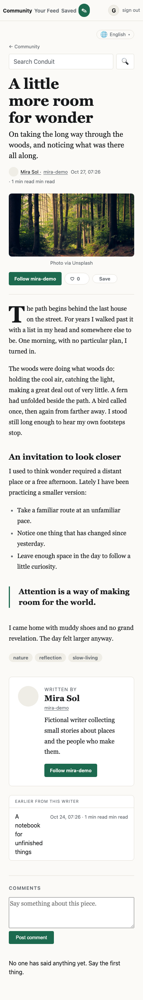

28 October 2026 · Browser evidence
A community ready to read
Before this turn, RealWorld had no declared release target and fresh databases had no starter articles. The Cloudflare release now carries six illustrated stories, fictional author profiles, and a working tag index. The existing editorial design remains the visual contract.
 Local Cloudflare Worker, populated from the migration. All six articles and their tags are visible.
Local Cloudflare Worker, populated from the migration. All six articles and their tags are visible.Space for a story
Cover photography, readable Markdown, a pull quote, and author context use the app's existing reading layout. The 390-pixel mobile viewport has no horizontal overflow; the cover image loads at both widths.
 Desktop · 1440 pixels.
Desktop · 1440 pixels.
Mobile · 390 pixels.Release checks
The Cloudflare snapshot build, application lint and tests, and the container replay, visual, and favorite integration checks passed. Browser inspection recorded no page errors. Guest authentication loaded the seeded feed and article in the local Worker. This evidence does not claim a live Cloudflare deployment.
Release configuration · Application contract